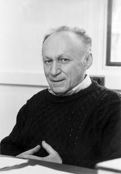

Ilya Piatetski-Shapiro | |
|---|---|
איליה פיאטצקי-שפירו | |
 | |
| Born | 30 March 1929 |
| Died | 21 February 2009 (aged 79) Tel Aviv, Israel |
| Alma mater | Moscow Pedagogical Institute (PhD) |
| Known for | Automorphic form L-functions |
| Awards | Israel Prize (1981) Wolf Prize (1990) |
| Scientific career | |
| Fields | Pure mathematics |
| Institutions | Moscow State University Steklov Institute Yale University Tel Aviv University |
| Alexander Buchstab | |
Doctoral students | James Cogdell Boris Moishezon Ze'ev Rudnick David Soudry Mina Teicher Andrei Toom Leonid Vaseršteĭn Ernest Vinberg |
Ilya Piatetski-Shapiro (Hebrew: איליה פיאטצקי-שפירו; Russian: Илья Иосифович Пятецкий-Шапиро, romanized: Ilya Iosifovich Pyatetsky-Shapiro;[a] 30 March 1929 – 21 February 2009) was a Soviet-Israeli mathematician. During a career that spanned 60 years he made major contributions to applied science as well as pure mathematics. In his last forty years, his research focused on pure mathematics; in particular, analytic number theory, group representations and algebraic geometry. His main contribution and impact was in the area of automorphic forms and L-functions.[1][2]
For the last 30 years of his life he suffered from Parkinson's disease. With the help of his wife Edith, he was able to continue to work and do mathematics at the highest level, even when he was barely able to walk and speak.
Piatetski-Shapiro was born in 1929 in Moscow, Soviet Union. Both his father, Iosif Grigor'evich, and mother, Sofia Arkadievna, were from traditional Jewish families, which had become assimilated. His father was from Berdichev, a small city in Ukraine, with a largely Jewish population. His mother was from Gomel, a similar small city in Belarus. Both parents' families were middle-class, but they sank into poverty after the October revolution of 1917. He became interested in mathematics at the age of 10, struck, as he wrote in his short memoir, "by the charm and unusual beauty of negative numbers", which his father, a PhD in chemical engineering, showed him.
In 1952, Piatetski-Shapiro won the Moscow Mathematical Society Prize for a Young Mathematician for work done while still an undergraduate at Moscow University. His winning paper[3][4] contained a solution to the problem of the French analyst Raphaël Salem on sets of uniqueness of trigonometric series. The award was especially remarkable because of the atmosphere of strong anti-Semitism in Soviet Union at that time.
Despite the award, and a very strong recommendation by his mentor Alexander O. Gelfond, a professor of mathematics at Moscow University and an important Communist Party member (Gelfond’s father was a friend of Lenin), Piatetski-Shapiro’s application to graduate program at Moscow University was rejected. He was ultimately admitted to the Moscow Pedagogical Institute, where he received his Ph.D. in 1954 under the direction of Alexander Buchstab. His early work was in classical analytic number theory. This includes his paper on what is now known as the Piatetski-Shapiro prime number theorem,[5] which states that, for 1 ≤ c ≤ 12/11, the number of integers 1 ≤ n ≤ x for which the integer part of nc is prime is asymptotically x / c log x as x → ∞.
After leaving the Moscow Pedagogical Institute, he spent a year at the Steklov Institute, where he received the advanced Doctor of Sciences degree, also in 1954, under the direction of Igor Shafarevich. His contact with Shafarevich, who was a professor at the Steklov Institute, broadened Piatetski-Shapiro's mathematical outlook and directed his attention to modern number theory and algebraic geometry. This led, after a while, to the joint paper[6] in which they proved a Torelli theorem for K3 surfaces.
Piatetski-Shapiro in 1958 was made a professor of mathematics at the Moscow Institute of Applied Mathematics, where he introduced Siegel domains. By the 1960s, he was recognized as a star mathematician. In 1965 he was appointed to an additional professorship at Moscow State University. He conducted seminars for advanced students, among them Grigory Margulis (now at Yale) and David Kazhdan (now at Hebrew University). He was invited to attend the 1962 International Congress of Mathematicians in Stockholm, but was not allowed to go by Soviet authorities (Shafarevich, also invited, presented his talk). In 1966, Piatetski-Shapiro was again invited to the ICM in Moscow[7] where he presented a 1-hour lecture on Automorphic Functions and arithmetic groups (Автоморфные функции и арифметические группы).
Piatetski-Shapiro was not allowed to travel abroad to attend meetings or visit colleagues except for one short trip to Hungary. The Soviet authorities insisted on one condition: become a party member, and then you can travel anywhere you want. Ilya gave his famous answer: “The membership in the Communist Party will distract me from my work.”
During the span of his career Piatetski-Shapiro was influenced greatly by Israel Gelfand. The aim of their collaboration was to introduce novel representation theory into classical modular forms and number theory. Together with Graev, they wrote the book Automorphic Forms and Representations.[8]
During the early 1970s, a growing number of Soviet Jews were permitted to emigrate to Israel. The anti-Jewish behavior in the Soviet Union, however, was not enough to make Piatetski-Shapiro want to leave his country. What shook him to the core was the difficulty of maintaining a Jewish identity and the enforced conformity to communism around him in the scientific community. He didn’t wish this future for his son, sixteen at the time.
Piatetski-Shapiro lost his part-time position at mathematics department of Moscow State University in 1973, after he signed a letter asking Soviet authorities to release a dissident mathematician Alexander Esenin-Volpin from a mental institution. Many other mathematicians who signed the letter (including Shafarevich) also lost their part-time positions.
After his ex-wife and son left the Soviet Union in 1974, Piatetski-Shapiro also applied for an exit visa to Israel and was refused. After applying for emigration in 1974, he lost his research position at the Moscow Institute of Applied Mathematics (IPM). The authorities refused to grant him an exit visa, claiming that he was too valuable a scientist to be allowed to leave. As a refusenik, he lost access to mathematical libraries and other academic resources. He continued his researches nevertheless, and colleagues took books from the library for him.
As a prominent refusenik with connections to an international scientific community, Piatetski-Shapiro was followed around by a KGB car and his apartment was under electronic surveillance. He conducted his meetings with friends and colleagues by writing on a plastic board, especially when he needed to communicate about his situation. His plight as a mathematician, with serious restrictions on his researches and without means for survival, attracted much attention in the U.S. and Europe. In 1976, a presentation was made to the Council of the National Academy of Sciences urging the use of their good offices to get Piatetski-Shapiro an exit visa. Later that year, he obtained one. His second marriage ended as his then-current wife remained in Moscow. He visited colleagues all over the world who had signed petitions and fought for his freedom before going to Israel. He was welcomed warmly upon arrival in Israel and accepted a professorship at Tel Aviv University. He was elected into Israel Academy of Sciences and Humanities in 1978.[9]
After leaving Soviet Union, Piatetski-Shapiro also visited the USA in 1976 and spent a semester as a visiting professor at University of Maryland.
Starting in 1977, Piatetski-Shapiro divided his time between Tel Aviv University and Yale University, directing doctoral dissertations in both places. One of his major works at Yale dealt with the converse theorem which establishes a link between automorphic forms on n by n matrix groups and zeta functions.
For n = 1 this theorem is classical. The assertion for n = 2 was proved by André Weil, and the novel version for n = 3 was conceived by Piatetski-Shapiro while he was still a refusenik in the Soviet Union. It took another 25 years and works with other collaborators, in particular his student James Cogdell, before a full result for the general case was completed.[10][11][12][13]
The converse theorem has played a role in many of the results known in the direction of the principle of functoriality of Langlands.
Piatetski-Shapiro battled Parkinson's disease for the last 30 years of his life. His condition worsened in the last 10 years to the point where he was barely able to move and speak, but thanks to the support of his wife Edith, he was still able to travel to mathematical conferences. With the help of James Cogdell he was able to continue research until almost his last days.
He was married three times and had a son, Gregory I. Piatetsky-Shapiro and daughters, Vera Lipkin and Shelly Shapiro Baldwin.
Piatetski-Shapiro was elected to the Israel Academy of Sciences and Humanities in 1978,[9] was a Guggenheim Fellow for the academic year 1992–1993,[14] and was the recipient of numerous prizes, including:
He was invited to address the quadrennial International Mathematical Congress — one of the highest mathematical honors — 4 times: 1962, 1966 (gave plenary address), 1978 (presented 45 minute talk), and 2002.
{kind=link}